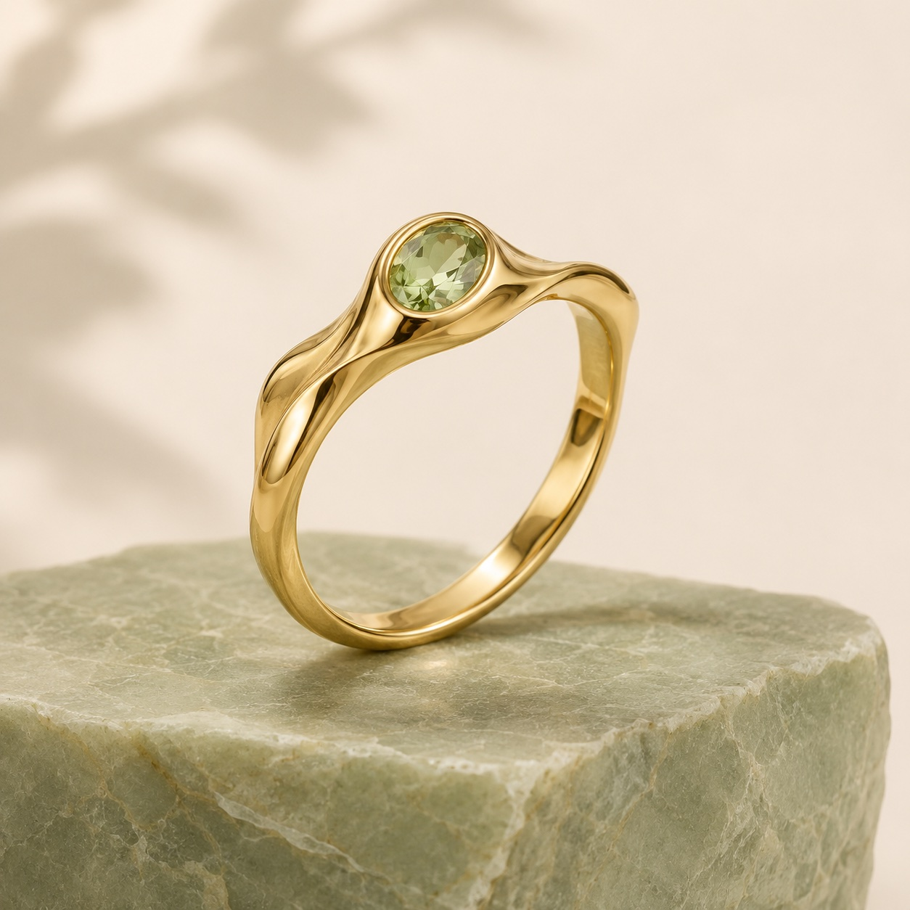
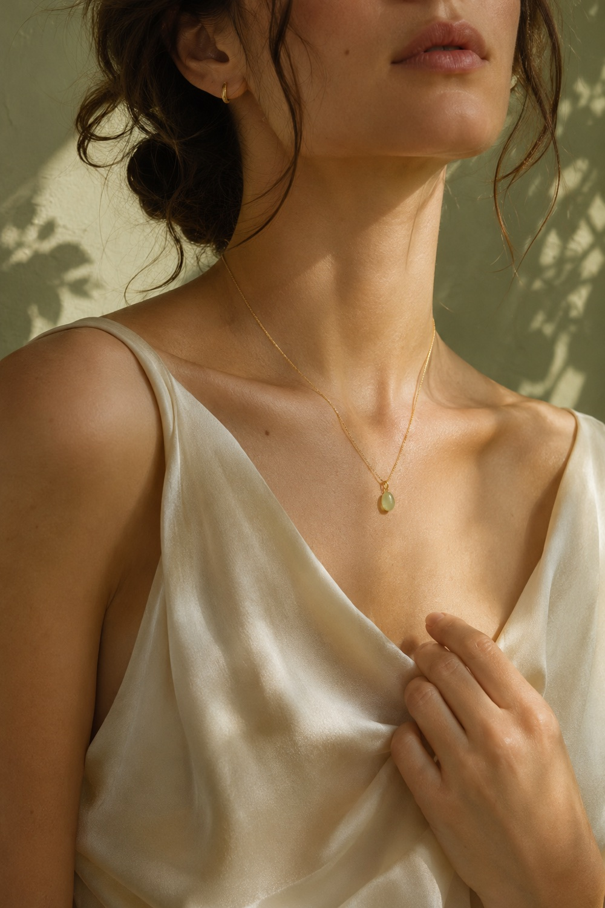

Set a slower pace
A short, softly moving hero opens the story. Still imagery remains available while the film loads and for visitors who prefer less motion.
A jewellery storefront built around the way light meets a piece.
Eight products, a quiet moving hero and an editorial rhythm give visitors room to look closely before choosing what to save.

Fine jewellery needs atmosphere, but a visitor still needs to understand individual pieces. The concept moves from a film-like introduction into closer product views and a clear collection.
A short, softly moving hero opens the story. Still imagery remains available while the film loads and for visitors who prefer less motion.
The collection moves from a featured ring into eight numbered pieces, mixing product close-ups with a wearing scene instead of repeating one grid.
Product details and a saved-pieces list let visitors explore without forcing a premature checkout decision.
The material palette stays soft and restrained so the shape, gold finish and green stones carry the visual weight.



Open the concept, browse the collection and try saving a piece. This demo has no live checkout or Shopify backend.
Open Liora Atelier ↗